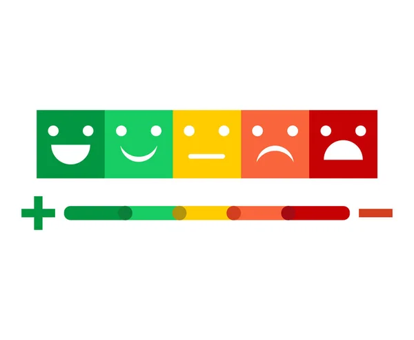

Emotional Health
Emotional wellbeing refers to the ability to understand and manage your emotions in a healthy way. This includes developing coping mechanisms for dealing with stress, cultivating positive relationships, practicing self-care, and fostering a sense of purpose and fulfillment in life. Activities such as journaling, spending time with loved ones, pursuing hobbies, and engaging in relaxation techniques can contribute to emotional wellbeing.

At its core, emotional health involves being in touch with one's emotions and recognizing their impact on thoughts, behaviors, and relationships. Emotional awareness lays the foundation for effective emotional regulation, allowing individuals to navigate life's challenges with grace and resilience. By cultivating mindfulness and self-reflection practices, individuals can develop a deeper understanding of their emotions and learn to respond thoughtfully rather than react impulsively.
In conclusion, nurturing emotional health is a multifaceted endeavor that requires attention, intention, and practice. By cultivating emotional awareness, building resilience, nurturing healthy relationships, and prioritizing self-care, individuals can enhance their emotional wellbeing and live more fulfilling lives. Moreover, fostering emotional health at the individual level contributes to the creation of resilient communities and a more compassionate society. As we continue to navigate the complexities of the modern world, let us remember that emotional health is not a luxury but a fundamental human need that deserves our utmost care and attention.